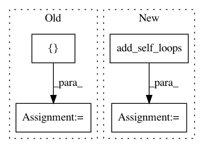

8a8a1b4b1773abe6e40f014c0a1797609b62d134,torch_geometric/nn/functional/graph_conv.py,,graph_conv,#Any#Any#Any#Any#Any#,22
Before Change
edge_attr *= degree[col]
edge_attr = torch.cat([edge_attr, degree * degree], dim=0)
loop = torch.arange(0, n, out=row.new()).view(1, -1).repeat(2, 1)
edge_index = torch.cat([edge_index, loop], dim=1)
adj = SparseTensor(edge_index, edge_attr, torch.Size([n, n]))
// Convolution.
output = SparseMM(adj)(torch.mm(x, weight))
After Change
edge_attr *= degree[row]
edge_attr *= degree[col]
edge_attr = torch.cat([edge_attr, degree * degree], dim=0)
edge_index = add_self_loops(edge_index, n)
adj = SparseTensor(edge_index, edge_attr, torch.Size([n, n]))
// Convolution.
output = SparseMM(adj)(torch.mm(x, weight))
In pattern: SUPERPATTERN
Frequency: 3
Non-data size: 4
Instances
Project Name: rusty1s/pytorch_geometric
Commit Name: 8a8a1b4b1773abe6e40f014c0a1797609b62d134
Time: 2018-03-07
Author: matthias.fey@tu-dortmund.de
File Name: torch_geometric/nn/functional/graph_conv.py
Class Name:
Method Name: graph_conv
Project Name: rusty1s/pytorch_geometric
Commit Name: a3a05105f0a696a99f0b65384f9bed8e8702256f
Time: 2018-04-18
Author: matthias.fey@tu-dortmund.de
File Name: test/utils/test_loop.py
Class Name:
Method Name: test_add_self_loops
Project Name: rusty1s/pytorch_geometric
Commit Name: b8f8a7876bdcbb05040350b2abb3486b5337b454
Time: 2019-08-04
Author: matthias.fey@tu-dortmund.de
File Name: torch_geometric/utils/get_laplacian.py
Class Name:
Method Name: get_laplacian